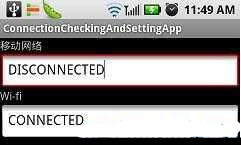

Android编程获取网络连接状态及调用网络配置界面
获取网络连接状态
随着3G和Wifi的推广，越来越多的Android应用程序需要调用网络资源，检测网络连接状态也就成为网络应用程序所必备的功能。
Android平台提供了ConnectivityManager 类，用于网络连接状态的检测。
Android开发文档这样描述ConnectivityManager的作用：
Class that answers queries about the state of network connectivity. It also notifies applications when network connectivity changes. Get an instance of this class by callingContext.getSystemService(Context.CONNECTIVITY_SERVICE).
The primary responsibilities of this class are to:
Monitor network connections (Wi-Fi, GPRS, UMTS, etc.) Send broadcast intents when network connectivity changes Attempt to "fail over" to another network when connectivity to a network is lost
Provide an API that allows applications to query the coarse-grained or fine-grained state of the available networks
下面这个简单的例子 checkNetworkInfo() 说明了如何编程获取Android手机的当前网络状态
private void checkNetworkInfo() { ConnectivityManager conMan = (ConnectivityManager) getSystemService(Context.CONNECTIVITY_SERVICE);
// mobile 3G Data Network
State mobile = conMan.getNetworkInfo(ConnectivityManager.TYPE_MOBILE)
.getState();
txt3G.setText(mobile.toString()); // 显示3G网络连接状态
// wifi
State wifi = conMan.getNetworkInfo(ConnectivityManager.TYPE_WIFI)
.getState();
txtWifi.setText(wifi.toString()); // 显示wifi连接状态
}
注:
根据Android的安全机制，在使用ConnectivityManager时，必须在AndroidManifest.xml中添加<uses-permission android:name="android.permission.ACCESS_NETWORK_STATE" /> 否则无法获得系统的许可。
运行结果(关闭3G及wifi网络连接的状态下)
调用Android手机的网络配置界面
使用过Android手机上的手机QQ的朋友，应该知道，当QQ启动时，如果没有有效的网络连接，QQ会提示转入手机的网络配置界面。这是如何实现的呢。其实很简单啦
private void checkNetworkInfo() { ConnectivityManager conMan = (ConnectivityManager) getSystemService(Context.CONNECTIVITY_SERVICE);
// mobile 3G Data Network
State mobile = conMan.getNetworkInfo(ConnectivityManager.TYPE_MOBILE)
.getState();
txt3G.setText(mobile.toString());
// wifi
State wifi = conMan.getNetworkInfo(ConnectivityManager.TYPE_WIFI)
.getState();
txtWifi.setText(wifi.toString());
// 如果3G网络和wifi网络都未连接，且不是处于正在连接状态 则进入Network Setting界面 由用户配置网络连接
if (mobile == State.CONNECTED || mobile == State.CONNECTING)
return;
if (wifi == State.CONNECTED || wifi == State.CONNECTING)
return;
startActivity(new Intent(Settings.ACTION_WIRELESS_SETTINGS));// 进入无线网络配置界面
// startActivity(new Intent(Settings.ACTION_WIFI_SETTINGS));
// //进入手机中的wifi网络设置界面
}
运行结果(关闭3G及wifi网络连接的状态下)，程序转入无线网络配置界面
startActivity(new Intent(Settings.ACTION_WIRELESS_SETTINGS));//进入无线网络配置界面
如果调用
startActivity(new Intent(Settings.ACTION_WIFI_SETTINGS)); //直接进入手机中的wifi网络设置界面
则直接进入手机中的wifi网络设置界面
在wifi网络连接后 运行该程序

我们可以看到 wi-fi 状态为已连接(CONNECTED).